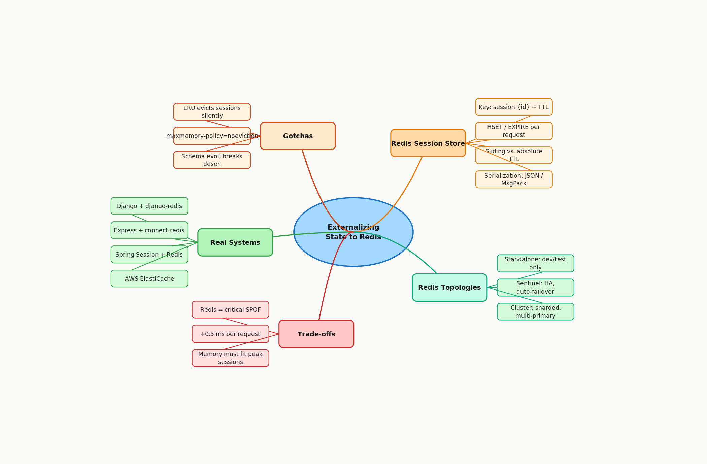

3.3 Externalizing State to Redis / Distributed Stores
01 🎯 Goal of This Subtopic
- Be able to take a stateful service design (in-memory session data on app servers) and refactor it into a stateless one by externalizing session state to Redis, explaining every architectural decision step by step.
- Understand why Redis is the canonical tool for this job — its data model, TTL semantics, and sub-millisecond latency — and when an alternative store might be appropriate instead.
- Identify the specific failure modes introduced by externalizing state (Redis SPOF, network hop, eviction policy collisions) and propose concrete mitigations for each.
- Recognize trigger phrases in an interview that signal this pattern is needed, and articulate the trade-off statement fluently.
02 ✅ What Mastery Looks Like
- Can describe what "externalizing state" means mechanically — what data moves, where it goes, and what changes on the app server — without referring to notes.
- Can explain the full Redis session store read/write flow step by step, including key design, serialization, TTL, and what happens on a cache miss.
- Can compare standalone Redis, Redis Sentinel, and Redis Cluster and choose the right topology for a given availability and scale requirement.
- Can identify at least three failure modes of a Redis-backed session store and propose a mitigation for each.
- Can walk an interviewer through a stateful-to-stateless refactor of a concrete service, justifying each step against the "share-nothing" principle.
03 🗓️ Study Phases to Achieve Mastery
Goal: Read deeply enough that you could explain the concept without the doc.
- Read Designing Data-Intensive Applications (DDIA) Ch. 1 — "Reliability, Scalability, Maintainability" — covers share-nothing and state externalization motivation
- Read the Redis official documentation: "An Introduction to Redis Data Types" and "Redis Sentinel" (redis.io/docs)
- Read the AWS ElastiCache documentation: "Managing User Sessions with Amazon ElastiCache for Redis"
- Read through Sections 5–9 (Core Definition → How It Works) carefully — don't skim
- Re-read the Cheatsheet (Section 4) and try to recite it from memory after
Goal: Verify you can reproduce the knowledge in your own words without looking.
- Close the doc — write out the Core Definition from memory, then compare
- Explain First Principles out loud without notes — what problem does this solve and why?
- Reconstruct the How It Works mechanics step by step from memory
- Restate each Trade-off row in your own words — if you can't explain the cost, you don't own it yet
Goal: Connect to real systems and simulate interview scenarios.
- Go through Real-World System Examples (Section 10) — verify each claim independently and add anything missed to My Notes
- Practice the Interview Application (Section 12) out loud — say the trigger phrases and your response as if in a live interview
- Work through Common Misconceptions (Section 13) — for each, explain why the misconception is wrong, not just that it is
- Trace the Relationships to Other Concepts (Section 14) — can you explain each connection without looking?
Goal: Confirm you actually own it, not just recognize it.
- Answer every Self-Check Quiz question (Section 15) out loud without looking at your notes
- Recite the Cheatsheet (Section 4) from memory — if you can't, re-do Phase 2
- Tick off items in What Mastery Looks Like (Section 2) — only check if you can demonstrate it on demand
- Teach this concept out loud to an imaginary interviewer for 2 minutes without hesitation
04 📋 Cheatsheet

05 🧠 Core Definition
06 📦 Core Concepts
The State Externalization Problem
When an app server holds session data in its own process memory, every subsequent request from the same user must land on the same server — otherwise the session is invisible. This creates sticky sessions (load balancer affinity), which breaks horizontal scaling: you can't freely add or remove nodes, node failure evicts all its sessions, and load distribution becomes uneven. The fix is to move ("externalize") session data to a store that is shared across all app servers — making the servers symmetric and replaceable.
Redis as a Distributed Session Store
Redis is an in-memory data structure store optimized for sub-millisecond reads and writes. For session storage, it provides three critical features: (1) native TTL per key — sessions expire automatically without cron jobs or GC; (2) Hash data type — structured session objects stored efficiently as field-value pairs under a single key; (3) high availability topologies — sessions don't evaporate when a single node fails. Its memory-resident design means a session lookup adds ~0.3–1 ms latency, not 5–50 ms like a database disk read.
Session Key Design
A well-designed key is session:{session_id}. The key must be: unique (no collisions across users or services), opaque to the client (never expose user IDs in session tokens — the session ID should be a random UUID), paired with a TTL (set on write), and predictable in structure for debugging and monitoring. Namespacing with a prefix allows Redis SCAN with pattern matching for counting active sessions without full key enumeration.
Redis Topology Options
Serialization and Deserialization
Session objects must be serialized before writing to Redis and deserialized on read. Common choices: JSON (human-readable, debuggable, ~10–30% larger); MessagePack (binary, compact, faster); Protobuf (typed, compact, requires schema management). Schema evolution — adding fields to session objects — must be handled carefully: old records that haven't expired yet will fail deserialization if a field is removed or renamed. Always write backward-compatible changes (add optional fields, never remove).
07 🔍 First Principles — Why Does This Exist?
The root problem is that HTTP is stateless, but applications are stateful. Early web apps stored session state in app server memory because it was fast and simple — and when you ran one server, it worked perfectly. As traffic grew, teams added more servers. Immediately, they hit the "missing session" problem: a user logged in on Server A, then their next request hit Server B, which had no record of their session, and they were asked to log in again.
The first stopgap was sticky sessions — the load balancer learned which server each user was attached to and always routed to that server. This worked, but at severe cost: you couldn't rebalance load freely, any server failure took its users' sessions with it (forcing re-login), and you couldn't run a rolling deployment without evicting sessions. The system had become tightly coupled — users to servers — and that coupling was the enemy of horizontal scaling.
The correct fix is the "share-nothing" principle applied to session state: no app server should own any piece of state that another can't access. By moving session data to a dedicated, shared, fast external store, all servers become identical. The external store — Redis — becomes the single source of truth for session state. App servers are reduced to stateless request processors: they receive a session ID, look it up in Redis, do their work, and optionally update the record. Any server can handle any request. This is why externalizing state to Redis is not just a performance trick — it is the architectural prerequisite for horizontal scaling.
08 🗺️ Mental Models
Model 1: The Hotel Key Card System
Imagine a hotel where every room uses a universal card reader that calls a central keycard server to validate. Any front desk clerk can issue or revoke a card; any door reader can validate it. No room is "bonded" to a particular clerk. This is Redis-backed sessions: the central keycard server is Redis, the rooms are app servers, and the key card is the session ID. Where the model breaks: the central keycard server itself becomes the single point of failure — which is why Redis Sentinel or Cluster is necessary in production, just as hotels have backup power for their core systems.
Model 2: "Dumb Servers, Smart Store"
Think of your app server fleet as interchangeable compute workers — they should be as dumb as a calculator: take input, produce output, remember nothing. All the intelligence about who the user is lives in Redis. When you design a system, ask: "Does this server know anything about a specific user that it couldn't reconstruct from Redis + the database?" If the answer is yes, you have unexternalized state. This frame makes it easy to audit designs for hidden statefulness and surfaces implicit coupling before it becomes a scaling problem.
Model 3: The State Evacuation
Refactoring a stateful service to externalize state is literally an evacuation: identify every piece of data that lives in app server memory — session objects, user preferences, rate limit counters, CSRF tokens, temporary upload state — and evacuate each one to Redis with a corresponding TTL and key design. The exercise of systematically listing what to evacuate surfaces hidden stateful assumptions. Where the model breaks: not everything should go to Redis. Large binary blobs belong in object storage; durable, queryable data belongs in a relational DB. Redis is for fast, ephemeral, small session-type data only.
09 ⚙️ How It Works — Mechanics
Write Path — Session Creation
- 1User authenticates (POST /login). App server validates credentials against the user DB.
- 2App server generates a cryptographically random, globally unique session ID (e.g., 128-bit UUID or
secrets.token_urlsafe(32)). Never use sequential IDs — they are guessable. - 3App server builds the session object:
{ user_id, roles, email, created_at, last_active }. - 4App server serializes the object to JSON (or MessagePack).
- 5App server writes to Redis:
SET session:{session_id} <json> EX 1800(30 min idle TTL). The atomicSET ... EXcommand avoids race conditions between SET and EXPIRE. - 6App server returns
Set-Cookie: session_id=<session_id>; HttpOnly; Secure; SameSite=Laxto client.
Read Path — Request Handling
- 1Browser attaches
Cookie: session_id=<session_id>on every request. - 2App server (any server in the fleet) extracts the session ID from the cookie.
- 3App server calls
GET session:{session_id}against Redis. - 4Cache hit: Redis returns the serialized session. App server deserializes it, reconstructs user context, processes the request. App server slides the TTL:
EXPIRE session:{session_id} 1800. - 5Cache miss (session expired or forged): App server returns
401 Unauthorizedand clears the session cookie.
Failure Scenarios
| Failure | What Happens | Mitigation |
|---|---|---|
| Redis primary fails (Sentinel) | Sentinel promotes a replica in ~5–15 s. Session reads fail during the failover window. | Retry with exponential backoff; return a friendly "please try again" rather than 500. |
| Memory pressure / LRU eviction | Redis silently evicts least-recently-used keys, which may include active sessions. User logged out without explanation. | maxmemory-policy=noeviction + alert at 80% memory usage + size Redis for 2× peak. |
| Network partition to Redis | All session lookups fail. All authenticated requests fail. | Circuit breaker: fail open for public endpoints, return 503 for auth-required endpoints, don't cascade to app crash. |
| Stale session data (role change) | Updated roles/permissions don't reflect in cached session until TTL expires or session is re-written. | On role change, explicitly update or delete the session record in Redis. Never rely solely on TTL for security-relevant updates. |
TTL Design: Absolute vs. Sliding
Absolute TTL: session expires N hours after creation regardless of activity. Simple implementation, but frustrating for active users who get logged out mid-session. Sliding TTL: the TTL is reset on every authenticated request via EXPIRE session:{session_id} 1800. Better UX, but requires a write on every request. Most production web apps use sliding TTL with an absolute cap (e.g., 30-min idle + 24-hr max enforced by a created_at check inside the session payload itself).
10 🏭 Real-World System Examples
| System | How This Concept Applies | Notes |
|---|---|---|
| Django (Python) | SESSION_ENGINE = 'django.contrib.sessions.backends.cache' with django-redis — all session data stored in Redis, keyed by session cookie value |
Default Django stores sessions in the DB; switching to Redis drops session read latency from ~5 ms to <1 ms |
| Express.js (Node) | express-session + connect-redis store — session middleware reads/writes to Redis on every authenticated request |
Redis key is sess:{session_id}; TTL set via ttl option in the store config |
| Spring Session (Java) | @EnableRedisHttpSession annotation — Spring auto-serializes HttpSession object to Redis |
Schema evolution (adding fields) can break deserialization of existing Redis records — handle carefully with versioned session structures |
| AWS ElastiCache for Redis | Managed session store for horizontally-scaled EC2/ECS apps; pairs with ALB session stickiness disabled | ElastiCache "cluster mode disabled" with Multi-AZ replication is the Sentinel equivalent; cluster mode enables sharding for higher volume |
| Shopify | Rails app externalizes session data and job state to Redis clusters; Redis is core infrastructure, not optional | At Shopify scale (~1M merchants), Redis is sharded by merchant ID range to prevent single large-keyspace bottlenecks |
11 ⚖️ Trade-offs
| ✅ Benefit | ❌ Cost / Limitation |
|---|---|
| Stateless app servers — any server handles any request; free horizontal scaling with no sticky sessions | Redis cluster is now a stateful, high-availability dependency; its failure takes down all authenticated sessions simultaneously |
| Sessions survive individual app server restarts, crashes, and rolling deployments — users stay logged in during deploys | Every authenticated request incurs a Redis round-trip (~0.3–1 ms) that didn't exist with in-memory sessions — small but non-zero latency tax |
| Immediate consistency across all app servers — role/permission changes take effect on the next request | Redis memory must be provisioned for peak concurrent session volume; underprovisioning + LRU eviction causes silent session loss |
| TTL-based auto-expiry requires zero app-level cleanup code or cron jobs | Serialization/deserialization of session objects adds CPU overhead; large or deeply nested session payloads amplify this on every request |
| Session state shareable across multiple microservices reading the same Redis key | Key design mistakes (missing TTL, key collisions, oversized values) are silent in development but catastrophic in production at scale |
12 🎯 Interview Application
Trigger Phrases
- "The system needs to scale to multiple app servers — how do you handle session state?"
- "What happens to user sessions when an app server goes down?"
- "How does your authentication layer work when you have 10 servers behind a load balancer?"
- "Walk me through how you'd make this service horizontally scalable."
What You Say / Do
In the high-level design phase, when you introduce your app server tier, proactively state that servers will be stateless by externalizing sessions to Redis. Draw the Redis cluster as a separate box. Walk through the read/write flow once to show you understand the mechanics, then immediately call out that Redis is now a critical HA dependency — so you'd deploy it with Sentinel or Cluster depending on scale, with proper memory sizing and maxmemory-policy=noeviction. This signals to the interviewer that you think about the second-order failure modes, not just the happy path.
The Trade-off Statement
13 ⚠️ Common Misconceptions & Gotchas
EXPIRE session:{id} 1800). This requires an additional Redis write on every request — a small but real cost you must consciously accept.14 🔗 Relationships to Other Concepts
3.1 — Stateless vs. Stateful Architecture (the motivation for externalizing state) and 3.2 — Session Management Approaches (identifies the specific data that needs externalizing — session records — and why in-memory alternatives fail at scale).
3.4 — JWT as Stateless Session Token (the alternative: encode session data in a signed token instead of Redis — no lookup, but no revocability) and 3.6 — Share-Nothing Architecture (Redis-backed session stores are the canonical implementation of share-nothing at the session layer).
5.x — Caching Systems. Redis can be session store and cache, but mixing these roles is dangerous: LRU eviction that clears cache entries can also evict sessions. Always use separate Redis instances or separate key namespaces with maxmemory-policy=noeviction on the session namespace.
15 🧪 Self-Check Quiz
Answer each question out loud without looking. Click the hint to reveal the model answer — but if you need it, revisit the section referenced.
16 📚 Further Reading
- Designing Data-Intensive Applications (DDIA) Ch. 1 — "Reliability, Scalability, Maintainability" — Kleppmann covers share-nothing and state externalization motivation (Kleppmann, O'Reilly)
- Redis official documentation — "An Introduction to Redis Data Types and Abstractions" and "Redis Sentinel" — redis.io/docs
- AWS documentation — "Managing User Sessions with Amazon ElastiCache for Redis" — aws.amazon.com/elasticache
- Martin Fowler — "Stateless Services" and "Session Object" patterns — martinfowler.com
- ByteByteGo Newsletter — "A Crash Course in Redis" — visual walkthrough of Redis topology options and session store patterns